Introduction to Puppet

Introduction to Puppet
Puppet:
- Open Source model-driven framework that centrally manages IT Systems
- Policy enforced consistency and auditing
- Modular solution allowing for work-load distribution and collaboration
Introduction to Puppet
Benefits:
Scalability:
- Manage thousands of systems from a central point
- Reliably distribute system administrative tasks to staff
Consistency
- Ensure that systems are in the intended state
- Eliminate inconsistency – QA/Staging/Production
- Improve velocity of new service delivery
- Security & Regulation Compliance
Operational efficiency
- Less time spent tracking system drift.
Introduction to Puppet
Community:
Distribution:
- Redhat (epel)
- Debian (stable)
- Ubuntu (main)
- Solaris (opencsw)
- Mac OSX (macports)
Activity:
- active 3000 person mailing list
- puppet-users@googlegroups.com
- regularily ~350 people in IRC
- #puppet on freenet.net
contributions:
- 100+ community members involved in project.
- 100+ modules committed to module forge.
Introduction to Puppet
Pervasive:
- Redhat
- Rackspace hosting
- Ebay
- NYSE
- Digg
- Zynga
- match.com
- citrix online
- …
Introduction to Puppet
Puppet Assigns and Maintains a Machine’s Desired Role
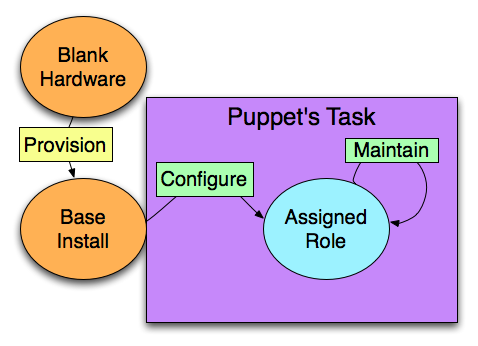
Introduction to Puppet
Managing Configuration Drift
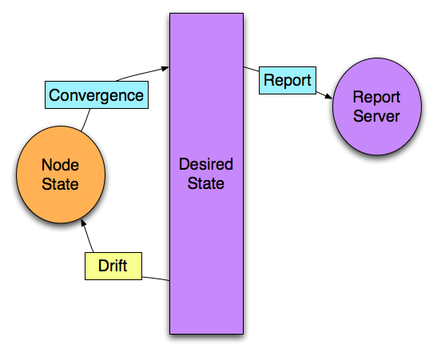
Course Overview
- The Resource Model
- Language and Expression
- Architecture and Installation
- Customization
Course Overview
Goals:
- Understand how to model systems configurations as resources using the Puppet language.
- Learn some common patterns of expression using the Puppet language.
- Practice debugging issues within your Puppet code.
- Develop an understanding of the architecture of the Puppet framework.
- Install and configure a working Puppet client/server environment.
Course Overview
Puppet Executables that we will employ:
facter– Executable and library that discovers facts about client systems.puppet resource{ralsh}– The Resource Abstraction Layer Shell.puppet apply{puppet}– Executable that interprets Puppet manifests, compiles the catalog, and applies the catalog locally.puppet master{puppetmasterd}– Centralized daemon that authenticates client connections, serves files, compiles templates, and provides puppet clients with a catalog.puppet agent{puppetd}– Puppet daemon that runs on client machines, makes connections to the puppetmaster, retrieves the catalog, and applies that catalog locally.puppet cert{puppetca}– Puppet’s built-in certificate authority.puppet filebucket{filebucket}– Puppet utility for sending files to a local or central filebucket.puppet kick{puppetrun}– Puppet utility for remote contact of puppet agent to trigger puppet execution.puppet doc{puppetdoc}– Command line tool for printing Puppet reference documentation.
Resources
Resources
Resources are the building blocks Puppet uses to model system configurations.
Simple user resource declaration.
user { 'elvis':
ensure => present,
gid => 'sysadmin',
}
Resource Abstraction Layer
The Resource Abstration Layer (RAL) provides a consistent model for resources across supported platforms.
Resource Abstraction Layer
Resource types depend on providers to translate specification into implementation.
package { 'httpd':
ensure => present,
}
Package is just one of the many native Puppet resource types.
Resource Abstraction Layer
Each resource type has one or more providers.
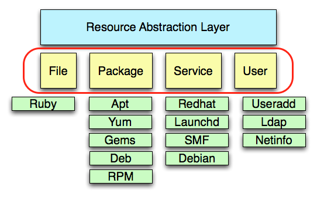
Resource Abstraction Layer
Providers are the interface between the underlying OS and the resource types.
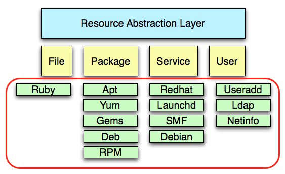
Resource Abstraction Layer
The package resource type has 29 providers:
ls -1 /usr/lib/ruby/site_ruby/1.8/puppet/provider/package
aix.rb blastwave.rb hpux.rb ports.rb up2date.rb appdmg.rb darwinport.rb nim.rb portupgrade.rb urpmi.rb apple.rb dpkg.rb openbsd.rb rpm.rb yum.rb apt.rb fink.rb pkg.rb rug.rb yumhelper.py aptitude.rb freebsd.rb pkgdmg.rb sun.rb zypper.rb aptrpm.rb gem.rb portage.rb sunfreeware.rb
The User Resource
Some basic attributes for the user resource type:
name: OS specified limits apply. (namevar)ensure: Sets the basic state of the user resource. Valid values areabsent,present.uid: Explicitly set the user’s uid number.gid: The user’s primary group. Can be specified numerically or by name.groups: The secondary group or groups to which the user is assigned. The primary group should not be listed. Multiple groups should be specified as an array.home: The users home directory.managehome: Whether to manage the home directory when managing the user. Valid values aretrue,false.
Namevar
Each resource has a special attribute called a namevar.
user { 'elvis-presley':
name => 'elvis',
ensure => present,
gid => 'sysadmin',
}
The namevar for the user resource is the name attribute.
Namevar
The namevar is the unique identifier for a resource.
user { 'elvis':
ensure => present,
gid => 'sysadmin',
}
When omitted the namevar is set to the title.
The Group Resource
Basic Attributes for the group resource type:
name: The group name. (namevar)ensure: Ensures that the group is present or absent. Valid values arepresent,absent.gid: The numerical group ID.
The Group Resource
A simple group resource declaration
group { 'sysadmin':
ensure => present,
gid => '5000',
}
Puppet Resource
Puppet Resource
Puppet resource is an executable that interacts directly with the Resource Abstraction Layer (RAL).
Puppet Resource
Executing puppet resource and providing a resource and a title returns the state of a resource.
root@puppetclient:~$ puppet resource user elvis
user { 'elvis':
ensure => 'absent'
}
Puppet Resource
Executing puppet resource and providing a resource, a title, and specifying an attribute alters the resource.
root@puppetclient:~$ puppet resource user elvis ensure=present
notice: /User[elvis]/ensure: created
user { 'elvis':
ensure => 'present',
}
root@puppetclient:~$ puppet resource user elvis
user { 'elvis':
home => '/home/elvis',
uid => '501',
gid => '501',
shell => '/bin/bash',
ensure => 'present',
password => '!!'
}
Puppet Resource
Executing puppet resource with the -e flag allows you to edit the resource declaration.
root@puppetclient:~$ puppet resource -e user elvis
user { 'elvis':
home => '/home/elvis',
uid => '501',
gid => '501',
shell => '/bin/sh',
ensure => 'present',
password => '!!'
}
Edit the generated Puppet code and save the file to make changes to a resource.
Parade of Resources
Native Resource Types
Core Resource types:
- user
- group
- host
- cron
- exec
- file
- package
- service
- mount
- tidy
Native Resource Types
Meta Resource Types:
- filebucket
- notify
- resources
- schedule
Native Resource Types
Component specific Resource types:
- augeas
- k5login
- selboolean
- selmodule
- mailalias
- maillist
- sshkey
- ssh_authorized_key
Native Resource Types
Platform specific Resource types:
- component
- macauthorization
- mcx
- yumrepo
- zfs
- zone
- zpool
Native Resource Types
Resources are limited by the features available in their providers
| Provider | duplicates | homedir | passwords | solaris_rbac | |
|---|---|---|---|---|---|
| directoryservice | n | n | y | n | |
| hpuxuseradd | y | y | n | n | |
| ldap | n | n | y | n | |
| netinfo | n | n | y | n | |
| pw | y | y | n | n | |
| user_role_add | y | y | y | y | |
| useradd | y | y | y | n |
Native Resource Types
Documentation can be generated:
puppet describe <type> -s
puppet doc -r type
The type reference documentation can also be found on the Puppet Labs website.
http://docs.puppetlabs.com/guides/types/index.html
The Host Resource
Attributes:
name: The host name (namevar).host_aliases: Sets host alias(es) (array).ensure: Can bepresentorabsent.ip: Sets the ip address for the host entry.
The Host Resource
Simple host resource declaration example.
host { 'training.puppetlabs.com':
ensure => 'present',
host_aliases => 'labs',
ip => '172.16.238.131',
}
The Host Resource
Exercise: Using The Host Resource Type
Use puppet resource to:
- Inspect the host entries in
/etc/hosts. - Add an entry to the host file.
- Delete an entry from
/etc/hosts.
The Package Resource
Attributes:
name: The package name. (namevar)ensure: Valid values arepresent,absent,latest,purge, versionprovider: Override the default package provider for your platform.source: Mounted filesystem or source that a particular package system understands.
The Package Resource
Simple package resource declaration.
package { 'ssh':
name => 'openssh-clients',
ensure => present,
}
The Package Resource
Exercise: The Package Resource Type
- Use
puppet resourceto inspect all packages installed on the system. - Use
puppet resourceto install apache.
The Package Resource
How does puppet resource know implicitly which provider to use for the package resource type?
Puppet client
Client Side Abstraction Layer
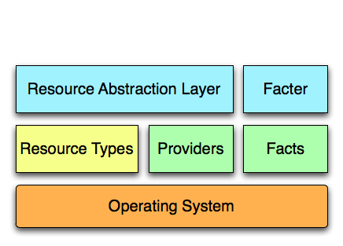
Facter
Puppet uses facter to gather information about the host system.
Facter
Executing the facter command returns a list of key value pairs.
root@puppetclient:~$ facter architecture => x86_64 domain => puppetlabs.com facterversion => 1.5.2 fqdn => puppetclient.puppetlabs.com hardwaremodel => x86_64 hostname => aku interfaces => eth0 ipaddress => 172.16.10.1 kernel => Linux operatingsystem => Ubuntu ...
The returned key value pairs are facts.
Facter
Exercise: Execute facter from the command line and examine the facts that are returned on your platform.
- Execute
facter ipaddress - What is returned?
- Execute
facter ipaddress_eth0 - What is returned?
Files
The File Resource
Basic Attributes:
path: Specifies the target location for file. (namevar)ensure: Accepts absent, present, file, and directory. Any other value will be treated as a symlink.owner: Owner of file.group: Group of file.mode: Mode of filecontent: Specifies the content of file as a string.source: Specifies the source of file.force: Force replacement of directories with a link. Valid values (true,false).ignore: Omits files matching specified patterns during recursion (Ex: .svn, .git).recurse: Whether or not directories should be managed recursively. Valid values (true,false)purge: Whether or not to purge unmanaged file resources within a directory. Valid values (true,false)
The File Resource
Simple file resource declaration with a local source.
file { '/etc/sudoers':
ensure => file,
group => 'root',
owner => 'root',
mode => '440',
source => '/etc/puppet/files/sudoers',
}
The File Resource
Directory example.
file { '/tmp/src':
ensure => directory,
mode => '0755',
}
The File Resource
Symlink examples.
- Example use of a managed file that also has a symlink associated with it.
file { '/etc/openldap/ldap.conf':
source => '/etc/puppet/files/ldap.conf',
}
file { '/etc/ldap.conf':
ensure => symlink,
target => '/etc/openldap/ldap.conf',
}
Puppet Apply
Puppet Apply
The puppet apply executable:
- interprets puppet code
- compiles a catalog
- uses the RAL to apply the catalog locally.
Puppet Apply
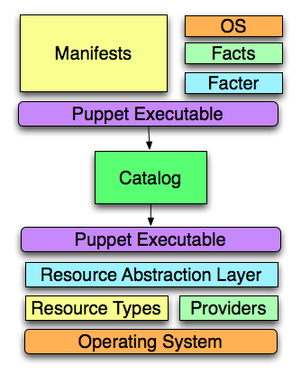
Puppet Apply
Files containing Puppet code are known as manifests and by convention have a .pp suffix.
Example Puppet Manifest:
user { 'elvis':
ensure => present,
home => '/home/elvis',
gid => 'elvis',
shell => '/bin/bash',
managehome => true,
}
group { 'elvis': ensure => present }
Puppet Apply
Options:
--debug: {-d} Enables detailed debugging information.--verbose: {-v} Enables verbose logging.--noop: Puppet code is interpreted but no changes occur.--parseonly: Only checks the manifest syntax.--modulepath: Colon separated list of paths to modules.--configprint: Prints out configuration options. Acceptsallor just one named parameter.--detailed-exitcode: Provide transaction information via exit code. 2= resource changes, 4 = transaction failures.--apply: applies a pre-compiled catalog (as of .25.2).
Puppet Apply
Exercise: Managing /etc/sudoers
- Create a
/etc/puppet/manifestsdirectory. - Create a
/etc/puppet/filesdirectory. - Create a manifest,
/etc/puppet/manifests/sudoers.pp. - In your manifest, use a file resource to manage
/etc/sudoersfrom a source file/etc/puppet/files/sudoers. - Run the puppet executable with the
--noopand--verboseoptions to interpret the manifest.puppet apply
--noop--verbose/etc/puppet/manifests/sudoers.pp - Run the puppet executable with the
--verboseoption to interpret the file. - Manually edit the
/etc/sudoersfile and use your manifest to restore it. - Edit your manifest file to manage the owner, group, and mode of
/etc/sudoers.
More Resources
The Resources Resource
Using the host resource type we can specify specific host entries.
host { 'kermit.puppetlabs.com':
ensure => present,
host_aliases => 'kermit',
ip => '172.16.238.131',
}
host { 'piggy.puppetlabs.com':
ensure => present,
host_aliases => ['piggy', 'missy'],
ip => '172.16.238.132',
}
host { 'oscar.puppetlabs.com':
ensure => absent,
}
The Resources Resource
What if we only want to have explicitly declared entries in the /etc/hosts file?
The Resources Resource
If a resource is ensurable then the resources resource type can be used to enable purging of unmanaged resources.
The Resources Resource
This will purge all unspecified host resources.
resources { 'host':
purge => true,
}
The Resources Resource
Attributes:
name: the name of the resource type that is to be managed. (namevar)purge:trueorfalseunless_system_user:true,false, or some upper uid limit specified as an integer.
The Resources Resource
Exercise: Purging unmanage resources.
- Use
puppet resourceto generate a manifest named hosts.pp in /etc/puppet/manifests. - Edit hosts.pp to include a
resourcestype that enables purging for thehostresource type. - Manually add a host entry to /etc/hosts.
- Use
puppet applyto interpret the hosts.pp manifest and ensure that the unmanaged resource is purged.
The Service Resource
Attributes:
name: The name of the service as understood on the underlying services subsystem. (namevar)enable: If a service should be started at boot. Can betrueorfalse.ensure: If the resource should currently be running. Can betrue,false,running, orstopped.hasrestart: Specifies that your service has a restart command. Can betrueorfalse.hasstatus: Specifies that your service has a status command. Can betrueorfalse.pattern: The pattern to search for in the process table.restart: Specify a restart command.start: Specify a start command.status: Specify a status command.stop: Specify a stop command.
The Service Resource
Example of a service resource type:
service { 'sshd':
enable => true,
ensure => running,
hasstatus => true,
hasrestart => true,
}
The Service Resource
Exercise:
- Use
puppet resourceto stop the sshd service. - What happens if you execute the same puppet resource command again?
- Set the parameter
hasstatus=trueand use puppet resource to start the sshd service. - Use
puppet resourceto start the sshd service. Be sure to usehasstatus=true.
Puppet Language
Puppet Language
Resource Declarations:
- Each resource declaration is made up of a type and title.
- Resources have attributes.
- By default the title sets the value for the namevar attributes.
- Resource type and title pairs must be unique within a compiled catalog.
- Resource type and namevar pairs must be unique within a compiled catalog.
Puppet Language
Basic syntax
- Resource names are lowercase when declaring a resource.
- Curly braces are used to declare a resource block.
- The title of the resource comes after the opening brace and before a colon.
- Attributes and title values containing only alphanumerics and
-do not need to be quoted (although it’s a best practice to quote all strings). - Attributes are assigned values using the
=>operator. - Attributes are separated by a comma.
- The comma is not required for the last attributes in a block (although it’s a best practice to include it).
Puppet Language
Example:
package { 'openssh':
ensure => present,
}
Puppet Language
The title of a resource can be different than the (namevar) of the resource.
package { 'ssh':
name => 'openssh-clients',
ensure => present,
}
Puppet Language
The attribute of the resource that the namevar refers to varies by resource type.
For the package resource type, name is the namevar.
package { 'ssh':
name => 'openssh-clients',
ensure => present,
}
For the file resource type, path is the namevar.
file { 'sudoers':
path => '/etc/sudoers',
source => '/etc/puppet/files/sudoers',
ensure => present,
}
Puppet Language
Puppet resources are declaritive. There is no implicit top-down ordering of resource execution.
Dependencies
Resource Relationships
How does Puppet handle relationships between resources?
Resource Relationships
Metaparameters
- Resource relationships are explicitly defined using metaparameters.
- Metaparameters work with all resource types.
- There are four metaparameters that establish relationships between resources.
Resource Relationships
Resources can depend on other resources.
The require and before metaparameters establish dependencies between resources.
Resource Relationships
The require metaparameter establishes a dependency from the containing resource to the referenced resource.
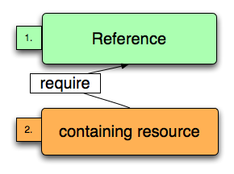
Resource Relationships
This ensures that the ssh service is started after the ssh package is installed.
package { 'openssh':
ensure => present,
}
service { 'sshd':
enable => true,
ensure => running,
require => Package['openssh'],
}
Resource Relationships
The before metaparameter establishes a dependency from the referenced resource to the containing resource.
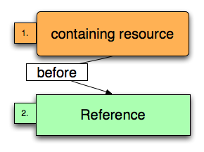
Resource Relationships
This also ensures that the sshd service is started after the ssh package is installed.
package { 'openssh-server':
ensure => present,
before => Service['sshd'],
}
service { 'sshd':
enable => true,
ensure => running,
}
Resource Relationships
Resources can be refresh by other resources.
The subscribe and notify metaparameters establish refreshed relationships between resources.
Resource Relationships
The subscribe metaparameter establishes a refresh relationship from the containing resource to a change in the referenced resource.
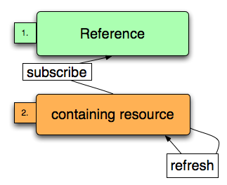
Resource Relationships
This manifest ensures that the ssh service is restarted if /etc/ssh/sshd_config changes.
file { '/etc/ssh/sshd_config':
ensure => present,
source => '/etc/puppet/files/sshd_config',
}
service { 'sshd':
enable => true,
hasstatus => true,
hasrestart => true,
ensure => 'running',
subscribe => File['/etc/ssh/sshd_config'],
}
The subscribe metaparameter implies require.
Resource Relationships
The notify metaparameter establishes a refresh relationship from the referenced resource to a change in the containing resource.
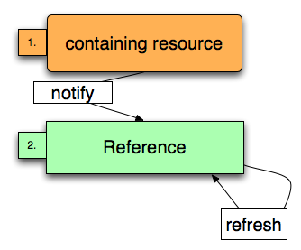
Resource Relationships
This manifest ensures that the ssh service is restarted if /etc/ssh/sshd_config changes.
file { '/etc/ssh/sshd_config':
ensure => present,
source => '/etc/puppet/files/sshd_config',
notify => Service['sshd'],
}
service { 'sshd':
enable => true,
hasstatus => true,
hasrestart => true,
ensure => running,
}
The metaparameter notify implies before.
Package-File-Service
We commonly specify several resources that together model a configuration.
Package-File-Service
The file /etc/ntp.conf needs to be edited after the package is installed.
package { 'ntp': ensure => present }
file { '/etc/ntp.conf':
owner => 'root',
group => 'root',
mode => '0644',
source => '/etc/puppet/files/ntp/ntp.conf',
require => Package['ntp'],
}
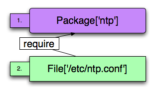
Package-File-Service
What if you want the ntpd daemon to restart when a change is made to the configuration file?
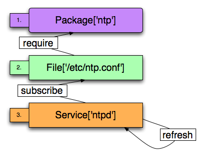
Package-File-Service
The ntp service resource is subscribing to the /etc/ntp.conf file resource.
package { 'ntp': ensure => present }
file { '/etc/ntp.conf':
owner => 'root',
group => 'root',
mode => '644',
source => '/etc/puppet/files/ntp/ntp.conf',
require => Package['ntp'],
}
service { 'ntpd':
enable => true,
ensure => running,
subscribe => File['/etc/ntp.conf'],
}
Package-File-Service
Exercise: Securing SSH
Create:
- A manifest
/etc/puppet/manifests/sshd.ppto manage sshd.
Ensure:
- The ssh package (openssh-server) is installed,
- The ssh service (sshd) is started,
- The
/etc/ssh/sshd_configfile does not allow root passworded logins. (Be sure you can login with another user account).
Use:
- File resource to manage the
/etc/ssh/sshd_configfile. - A
sourceparameter and source the file from/etc/puppet/files/sshd_config. - A metaparameter to make sure that sshd is restarted when a change is made to the
/etc/ssh/sshd_configfile.
Hint: To disable root password logins set PermitRootLogin no
Implicit Dependencies
For some related resources Puppet creates implicit dependencies.
Implicit Dependencies
Users and Groups have an implicit dependency.
Explicitly assigned dependency.
user { 'elvis':
ensure => present,
home => '/home/elvis',
managehome => true,
uid => '5000',
gid => 'hounddog',
shell => '/bin/bash',
# not required!
require => Group['hounddog'],
}
group { 'hounddog':
ensure => present,
gid => '5000',
}
Implicit Dependencies
The explicit dependency is not necessary, because Puppet implicitly orders users and groups.
user { 'elvis':
ensure => present,
home => '/home/elvis',
managehome => true,
uid => '5000',
gid => 'hounddog',
shell => '/bin/bash',
}
group { 'hounddog':
ensure => present,
gid => '5000',
}
Implicit Dependencies
Files and directories have an implicit relationship.
The foo directory must exist before bar.conf can be created.
file { '/etc/foo.d':
ensure => directory,
owner => 'root',
group => 'root',
mode => '0755'
}
file { '/etc/foo.d/bar.conf':
owner => 'root',
group => 'root',
mode => '0755',
content => 'This file configures the foobar',
require => File['/etc/foo.d'],
}
Implicit Dependencies
Puppet implicitly recognizes file hierarchy so the requires are unneccessary.
file { '/etc/foo.d':
ensure => directory,
owner => 'root',
group => 'root',
mode => '0755',
}
file { '/etc/foo.d/bar.conf':
owner => 'root',
group => 'root',
mode => '0755',
content => 'This file configures the foobar',
}
Implicit Dependencies
There is also an implicit relationship between file ownership and user resources.
user { 'elvis':
ensure => present,
home => '/home/foo',
managehome => true,
uid => '5000',
gid => 'hounddog',
shell => '/bin/bash',
}
group { 'hounddog':
ensure => 'present',
gid => '5000',
}
file { '/etc/graceland':
owner => 'elvis',
group => 'hounddog',
mode => '755',
content => 'Graceland is a happy home.',
}
Code Compression
Resource Defaults
Puppet allows you to declare resource defaults.
File { owner => 'root', group => 'root', mode => '0644' }
Resource Defaults
Example: The code for the previous file hierarchy example can be compressed.
File { owner => 'root', group => 'root', mode => '0644' }
file { '/etc/foo.d':
ensure => directory,
}
file { '/etc/foo.d/bar.conf':
content => 'This file configures the foobar',
}
Resource Defaults
Exercise: Using Resource Defaults
- Create a manifest,
/etc/puppet/manifests/resource_defaults.ppthat manages a directory/tmp/defaults. - Specify the owner, group and mode in a resource default.
- Set the mode to “644”.
- Extend the manifest to create two files,
/tmp/defaults/helloand/tmp/defaults/goodbye. - Use
puppet applyto interpret the manifest. - What is the mode of the
/tmp/defaultsdirectory?
Multiple Resource Declarations in a Single Block
We can compress the previous example by declaring multiple file resources in a single block.
Example:
File { owner => 'root', group => 'root', mode => '0644' }
file {
'/etc/foo.d': ensure => directory;
'/etc/foo.d/bar.conf': content => 'This file is foobar';
}
Multiple Resource Declarations in a Single Block
Exercise: Refactor the previous exercise to specify the file resources in a single block.
More Language Constructs
Variables
Puppet supports variables:
Variables are prefixed with ‘$’
$foo_dir = '/etc/foo.d'
File { owner => 'root', group => 'root', mode => '0644' }
file {
$foo_dir: ensure => 'directory';
"$foo_dir/bar.conf": content => "Configuring the $foo_dir/bar.conf";
"$foo_dir/baz.conf": content => "Configuring the $foo_dir/baz.conf";
}
Variables
Facts are available as global variables.
Use the $hostname fact as a variable in file content.
$foo_dir = "/etc/foo.d"
File { owner => "root", group => "root", mode => "0644" }
file {
"${foo_dir}":
ensure => directory;
"${foo_dir}/bar.conf":
content => "My hostname is $hostname";
}
Variables
Quoting
- Single-quoted strings disallow variable interpolation.
- Double-quoted strings allows variable interpolation.
- Variables in strings can be bracketed with {} for clarity.
Variables
For clarity interpolated variables should be bracketed.
$foo_dir = '/etc/foo.d'
File { owner => 'root', group => 'root', mode => '0644' }
file {
$foo_dir: ensure => directory;
"${foo_dir}/bar.conf":
content => "Configuring the ${foo_dir}/bar.conf for ${hostname}",
mode => '0644';
}
Variables
Can’t reassign variables.
File { owner => 'root', group => 'root', mode => '0644' }
$foo_dir = '/etc/foobar'
file {
$foo_dir: ensure => 'directory';
"${foo_dir}/bar.conf":
content => "Configuring the ${foo_dir}/bar.conf for ${hostname}";
}
$foo_dir = '/etc/foobaz'
file {
$foo_dir: ensure => 'directory';
"${foo_dir}/baz.conf":
content => "Configuring the ${foo_dir}/baz.conf for ${hostname}";
}
Arrays
The Puppet Language also supports simple Arrays
Example
$somearray = [ 'one', 'two', 'three' ]
Arrays
Arrays can be used as an argument to some resource parameters.
The user resource’s groups parameters accepts an array as an argument.
user { 'elvis':
ensure => 'present',
home => '/home/elvis',
uid => '5000',
gid => 'hounddog',
shell => '/bin/bash',
groups => ['jailhouse', 'surfer', 'legend'],
}
Arrays
Arrays can also be arguments to metaparameters:
service { 'syslog':
enable => true,
ensure => running,
require => [ File['/etc/rsyslog.conf'], Package['rsyslog'] ],
}
Arrays
Arrays can also be used as the title for resources:
file{['/tmp/one', '/tmp/one/two', '/tmp/one/two/three']:
mode => '0750',
owner => 'root',
group => 'root',
ensure => directory,
}
Conditionals
Puppet supports three conditional expressions:
- the selector
- case statements
- if/else/elsif statements
These conditionals can be divided into two types, in-statement and around statement.
Conditionals
The selector can be used as an in-statement conditional.
package { 'ssh':
name => $operatingsystem ? {
'Ubuntu' => 'ssh',
default => 'openssh',
},
ensure => present,
}
Conditionals
Exercise: Using Selectors
Create:
- A manifest,
/etc/puppet/manifests/in_selector.pp
Use:
- A file resource to set the content parameter of the file
/tmp/os. - A selector inside the file resource to set the content parameter based on the value of the
$operatingsystemfact. puppet applyto verify that your manifests sets the appropriate content for/tmp/os.
Conditionals
Selectors can also be used to assign variables:
$sshpkgname = $operatingsystem ? {
'Ubuntu' => 'ssh',
default => 'openssh',
}
package { 'ssh':
name => $sshpkgname,
ensure => present,
}
Selectors are case insensitive.
Conditionals
Exercise: Using The Selector outside a resource.
Create:
- A manifest,
/etc/puppet/manifests/out_selector.pp
Use:
- A file resource to set the content parameter of the file
/tmp/os. - A selector to set a variable to be used inside file resource.
- The
$operatingsystemfact to set the content parameter. puppet applyto verify that your manifests sets the appropriate content for/tmp/os.
Conditionals
The case statements can be used around resources or collections of resources.
case $operatingsystem {
'debian': { include Debian } # apply the Debian class
'ubuntu': { include Ubuntu } # apply the Ubuntu class
default: { include Centos } # apply the Centos class
}
Case statements are case insensitive.
Conditionals
Case statements can be used to set variables as well.
case $operatingsystem {
'ubuntu': {
$ssh_pkg = 'ssh'
}
'solaris': {
$ssh_pkg = [ 'SUNWsshcu', 'SUNWsshdr', 'SUNWsshdu', 'SUNWsshr', 'SUNWsshu' ]
}
# default assumes CentOS, RedHat
default: {
$ssh_pkg = ['openssh', 'openssh-clients', 'openssh-server']
}
}
package { $ssh_pkg:
ensure => present,
}
Conditionals
Exercise: Using the case conditional to assign variables.
Create:
- A manifest,
/etc/puppet/manifests/case.pp
Use:
- A file resource to set the content parameter of the file
/tmp/os. - The case conditional to set a variable to be used inside file resource based on the
$operatingsystemfact. - The variable as the value for the content parameter.
puppet applyverify that your manifests sets the appropriate content for in/tmp/os.
Conditionals
If/else/elsif conditionals can treat variables as boolean expressions.
The following values return false:
undef''false
if $foo {
file { '/etc/foo': ensure => present }
} else {
file { '/etc/foo': ensure => absent }
}
If/else/elsif conditionals are case senstive.
Conditionals
If/else/elsif can also be used with more complicated boolean expressions
if $server != 'foo' {
file { '/etc/foo': ensure => absent }
} else {
file { '/etc/foo': ensure => present }
}
If/elsif conditionals also support regular expressions.
$server='blahfoo222'
if $server =~ /.*?foo\d+$/ {
notice('matches regex')
} else {
notice('does not match regex')
}
Conditionals
Puppet now supports a more complete set of conditional expressions.
Puppet expressions can be composed of:
- boolean expressions (
and,or, andnot) - comparison expression ( ==, !=, =~, <, >, <=, >= )
- arithmetic expressions ( +, -, /, *, <<, >> )
Conditionals
Operator precedence
- ! (not)
- * / (times and divide)
- - + (minus, plus)
- << >> (left shift and right shift)
- == != (equal, not equal)
- >= <= > < (greater or equal, less or equal, greater than, less than)
- and
- or
Parenthesis can be used to group expressions and explicitly set precendence.
Lab
Lab: Manage User Environment
Create:
- A manifest
/etc/puppet/manifests/myenv.pp.
Use:
- A variable $username to specify the user.
- A file resource to manage the user’s
.vimrcfile and.vimdirectories within their home directory. - A conditional statement and variable interpolation to manage
.ssh/authorized_keys.- Root should not have an
authorized_keysfile. - Other users should have individual
authorized_keysfiles.
- Root should not have an
- Test this manifest as two different users (
root, your account) by changing the $username variable.
Hint: Use ssh-keygen -t rsa -b 2048 to create your ssh keys. You will probably want to do this on your host machine. Copy the generated id_rsa.pub to the users authorized keys file.
Templates
Templates
Puppet uses Ruby’s builtin templating, ERB.
http://www.ruby-doc.org/stdlib/libdoc/erb/rdoc/classes/ERB.html
Templates
Basic ERB syntax: Variables
# ERB syntax to return the value of a Ruby variable. <%= somevariable %>
Templates
Basic ERB syntax: Iteration
# We can also iterate over arrays <% fooarray.each do |val| %> Foo array has a value of <%= val %> <% end %>
Templates
Basic ERB syntax: Conditionals
# We can also use conditional expressions.
<% if var != "foo" %><%= var %> is not foo! <% end %>
# And we can test to see if a variable exists.
<% if has_variable?("virtual") then %>
This is a virtual machine of type: <%= virtual %>
<% end %>
Templates
Templates are implemented using the template function.
$somestring = template("/etc/puppet/templates/stringgen.erb")
Templates
The template function can be used to set the value of content in a file resource.
file { "/etc/warning":
ensure => present,
content => template("/etc/puppet/templates/warning.erb")
}
Templates
The template function will concatenate multiple templates.
file { "/etc/warning":
ensure => present,
content => template("${module_name}/header.erb", "${module_name}/warning.erb"),
}
Templates
Puppet variables and arrays are passed into templates as ruby variables and arrays.
For example the $ipaddress fact would be available as the ipaddress variable within a template.
Templates
Exercise: Motd Template
Create:
- An
/etc/puppet/templatesdirectory. - An
motd.erbfile within the templates directory.
Use:
- Use the
operatingsystem,memoryfree, anddomainfacts in your template. - Create an
/etc/puppet/manifests/motd.ppmanifest. - Use the template function to set the content value for
/etc/motd. - Use the
puppet applyexecutable to test your manifest.
Modules
Puppet Modules
Modules are not language constructions but rather a convention for encapsulating configurations.
- autoloading of classes
- configuration of fileserving for templates and files.
Puppet Modules
Puppet modules must be located in the modulepath.
# puppet.conf on puppet master [master] modulepath=/etc/puppet/modules
Puppet Modules
Puppet modules are contained in a directory named after the module. The module’s directory contains five special sub directories.
- manifests
- templates
- files
- tests
- lib
Puppet Modules
Example: ssh module structure.
/etc/puppet/modules/ssh
├── files
├── lib
├── manifests
│ └── init.pp
├── templates
└── tests
└── init.pp
Puppet Modules
By convention these directories enable autoloading of classes
Autoloading convention:
- Classes and definitions in
init.ppare always imported as long as they are prefixed with the modulename. - Classes and definitions not in
init.ppnamedmodulename::namecan be placed in a filename.pp. - Classes and definitions not in
init.ppnamedmodulename::name::foocan be placed inname/foo.pp. - Additional namespaced classes and definitions repeat the directory and name pattern.
Puppet Modules
Auto-importing: By convention modules allow you to import files within the manifests directory automatically.
- The URI convention is
puppet:///modules/${module_name}/filename - The template path is automatically set up:
template("${module_name}/template.erb")
Puppet Modules
Example: init.pp
class ssh {
package { "openssh-server":
ensure => present,
} # package
File { owner => "root", group => "root", mode => "0644"}
file {
"/etc/ssh":
ensure => directory;
"/etc/ssh/ssh_known_hosts":
ensure => present;
"/etc/ssh/ssh_config":
ensure => present,
source => "puppet:///modules/ssh/ssh_config";
} # file
service { "sshd":
enable => false,
ensure => stopped,
require => Package["openssh-server"],
} # service
} # class ssh
Puppet Modules
Example: server.pp
class ssh::server inherits ssh {
file { "/etc/ssh/sshd_config":
ensure => present,
source => "puppet:///modules/ssh/sshd_config"
} # file
Service["sshd"] {
enable => true,
ensure => running,
} # Service
} # class ssh::server
Puppet Modules
Recommended Practices with tests
- Should have one class or define per file in the manifests directory.
- Create a
testsdirectory for each module. - Mirror the file structure of the manifests directory within the
testsdirectory. - Use the include function to include each class in its corresponding
tests/*.ppfile. - For defined resources, declare the resource in its corresponding
tests/*.ppfile.
Puppet Modules
Recommended Practices
- Should have one class or define per file
/etc/puppet/modules/ssh/manifests/init.pp /etc/puppet/modules/ssh/manifests/server.pp /etc/puppet/modules/ssh/tests/init.pp /etc/puppet/modules/ssh/tests/server.pp
Puppet Modules
Testing
cd /etc/puppet/modules/ssh puppet apply -v --modulepath=/etc/puppet/modules tests/server.pp
Puppet Modules
Recommended Practices
Use multiple module paths.
- Create at least one modulepath for small reuseable modules (dist).
- Create another modulepath for composite modules that model larger services that you are delivering (site).
- Allow modules in dist to depend only on other modules in dist.
- Allow modules in site to depend on modules in dist and site.
/etc/puppet/modules/site /etc/puppet/modules/dist
Classes
Classes in Puppet are used to model fundamental aspects of nodes.
- Classes are declarative
- Classes are singleton
Classes
Example: ssh client class.
# /etc/puppet/modules/ssh/manifests/init.pp
class ssh {
package { "openssh-clients":
ensure => present,
} # package
file { "/etc/ssh/ssh_config":
owner => "root",
group => "root",
mode => "644",
require => Package["openssh-clients"],
source => "puppet:///modules/ssh/ssh_config",
} # file
service { "sshd":
ensure => stopped,
enable => false,
} # service
} # class ssh
Classes
Classes also support single inheritance in which you can override resource parameters.
Classes
Example: ssh::server class
# /etc/puppet/modules/ssh/manifests/server.pp
class ssh::server inherits ssh {
package { "openssh-server":
ensure => latest,
} # package
file { "/etc/ssh/sshd_config":
owner => "root",
group => "root",
mode => "644",
source => "puppet:///modules/ssh/sshd_config",
require => Package["openssh-server"],
} # file
Service["sshd"] {
enable => true,
ensure => running,
subscribe => File["/etc/ssh/sshd_config"],
require => Package["openssh-server"],
} # Service
} # class ssh::server
Classes
You can also undef resource parameters.
class foo {
file{ "/tmp/foobar": source => "puppet:///modules/foo/foobar" }
}
class foo::bar inherits foo {
File["/tmp/foobar"] { source => undef, content => "some foobar text" }
}
Classes
You can also append values to a resource parameter.
class foo {
package { "foo": ensure => present }
service { "foo": ensure => true, require => Package["foo"] }
}
class foo::bar inherits foo {
package { "bar": ensure => present }
Service["foo"] { require +> Package["bar"] }
}
Classes
You can also create relationships to classes using require and before.
class foo {
file { "foo1": content => "foo_1", }
file { "foo2": content => "foo_2", }
file { "foo3": content => "foo_3", }
} # class foo
class bar {
service { "bar":
ensure => true,
require => Class["foo"],
} # service
} # class bar
Classes
Classes can be composed from other classes using the include function.
class foobar {
include foo
include bar
} # class foobar
Puppet Modules
Exercise: Convert our existing manifests into modules.
Create:
- A
/etc/puppet/modulesdirectory
Do:
- Convert our ssh, sudoers and motd manifests to modules.
- Use the
puppet applyexecutable with the--modulepathargument to test the new modules.
Lab
Lab: bluetooth and bluetooth::disable classes.
Create:
- A bluetooth module,
/etc/puppet/modules/bluetooth/ - A testing manifest,
/etc/puppet/modules/bluetooth/tests/init.pp
Part 1:
- Use a class bluetooth that ensures:
- the package
bluez-libsandbluez-utilsare installed, - the service
hiddis running.
- the package
- Edit
/etc/puppet/modules/bluetooth/tests/init.ppto include the bluetooth class, then usepuppet applyto test it.
Part 2:
- Use a subclass called
bluetooth::disablethat ensures that thebluez-libsandbluez-utilspackage are not installed, and that thehiddservice is disabled. - Edit
/etc/puppet/modules/bluetooth/tests/disable.ppto include thebluetooth::disableclass and usepuppet applyto test it.
Classes
Classes can be parameterised.
- Parameterised classes can accept default values.
- Parameterised classes can be included multiple times.
- Parameterised classes can only be declared once.
class apache($version="2.0", $home="/var/www") {
...
}
class php {
include apache
...
}
node webserver {
class { "apache":
version => "1.3.13"
}
}
Classes
Resource relationship abbreviation
- Require and Before are expressed using
<-and->. - Subscribe and Notify are expressed using
<~and~>.
Package["apache"] -> File["/var/www"] ~> Service["httpd"]
Service["httpd"] <~ File["/var/www"] <- Package["apache"]
file { "/var/www": ensure => present } -> service { httpd: ensure => running }
Classes
Exercise: Bluetooth Class Parameterised
Update Bluetooth Class:
- Modify bluetooth class to accept a parameter which specifies if the service should be enabled or disabled.
- Modify bluetooth class to describe resource dependency using the abbreviated
->and<-syntax. - Modify existing test,
tests/init.pp, and verify new bluetooth class works as expected.
Defined Resource Types
Defined resource types behave like custom resource types.
- Accepts Metaparameters
- Can be used multiple times
Defined Resource Types
Vhost example
define vhost($port, $path = '/etc/httpd/conf.d') {
file {"${path}/${name}.conf":
ensure => present,
owner => 'apache',
group => 'apache',
mode => '0644',
# assume that $port is used inside template
content => template('/etc/puppet/templates/vhost.erb'),
}
}
Defined Resource Types
Using a defined resource example.
vhost { 'training.puppetlabs.net':
port => '8080',
require => Package['httpd'],
notify => Service['httpd'],
}
Defined Resource Types
Exercise: User and group defined resource type.
- Create a module,
/etc/puppet/modules/usermanagement/ - Use a defined resource type to parameterize user management.
- Include management of home directories and group in the define.
Defined Resource Types
Defined resource types can take advantage of class inheritance and parameter overriding.
define ssh_config($ssh_path = '/etc/ssh') {
file {"${ssh_path}/${name}":
source => "/files/puppet/${ssh_path}",
recurse => true
}
}
class ssh {
ssh_config{ 'config':}
}
class ssh::secure inherits ssh {
Ssh_config['config'] { ssh_path => '/etc/secure/ssh' }
}
Defined Resource Types
We can use namespaces to refer to definitions in other classes.
Example:
class role {
define servertype ($myrole) {
file { '/tmp/role': content => $myrole, }
notice("Setting role to ${myrole}")
}
}
role::servertype { 'foo': myrole => 'fooserver' }
Scope
Variable Scope
Every class, definition, or node introduces a new scope.
Variable Scope
We can use namespaces to refer to variables in other classes.
class alpha {
$myname = 'alpha'
notice("I am ${myname}")
}
class beta {
include alpha
$myname = 'beta'
notice("I am not ${alpha::myname}. I am ${myname}")
}
Variable Scope
There is a top scope for variables declared outside of classes, defines, or nodes.
Variable Scope
Facts are set at top scope.
class system {
$operatingsystem = "MyOS"
notice ("The operating system is: ${operatingsystem}")
}
class truesystem {
$operatingsystem = "MyOS"
notice ("The true operating system is: $::operatingsystem")
}
Variable Scope
Within a single scope variables cannot be re-declared.
class scope {
$somecontent = 'Content in /tmp/foo'
file { '/tmp/foo': content => $somecontent}
$somecontent = 'Content in /tmp/baz'
file { '/tmp/baz': content => $somecontent, }
}
Variable Scope
In non-overlapping scopes variables can be redeclared.
class parent {
$somecontent = 'Parent'
file { '/tmp/foo': content => $somecontent }
}
class child inherits parent {
$somecontent = 'child is scope two'
file { '/tmp/baz': content => $somecontent }
}
Variable Scope
Variables declared in scope are implicitly namespaced.
class parent {
$somecontent = 'Parent'
file { '/tmp/foo': content => $parent::somecontent }
}
class child inherits parent {
$somecontent = 'Child'
file { '/tmp/baz': content => $child::somecontent }
}
Variable Scope
Variables as resource parameters can be overridden to take advantage of qualified variable scopes.
class parent {
$somecontent = 'Parent'
file { '/tmp/foo': content => $parent::somecontent }
}
class child inherits parent {
$somecontent = 'Child'
file { '/tmp/baz': content => $child::somecontent }
File['/tmp/foo'] { content => $child::somecontent }
}
Variable Scope
Include work around.
Use a variable assigned in the top scope and a include to reassign the value of content.
$somecontent = 'top'
class one {
file { '/tmp/foo': content => $somecontent, }
}
class two {
$somecontent = 'beta'
include one
file { '/tmp/baz': content => $somecontent, }
}
include two
Variable Scope
But Order Matters!
Example: This is why I avoid this hack..
$somecontent = 'top'
class one {
file { '/tmp/foo': content => $somecontent, }
}
class two {
include one
$somecontent = 'beta'
file { '/tmp/baz': content => $somecontent, }
}
include two
Run Stages
Overview
- Augments the already learned dependency structure by giving you an alternate facility for creating order.
- You must understand parameterized classes to take advantage of run stages.
- Currently intentionally limited.
- Only entire classes can be put in a run stage.
- Must declare run stage before you can use them.
- “before” in previous bullet is meant to be taken in a literal sense. Run stages are affected by the same scoping issues as variables.
Run Stages
Declaring the run stages resource
- You declare them like any other resource.
- There is always an implied stage called main.
- Stage main is the default stage for all classes.
- Can use the
beforeandrequiremetaparamters to create stage ordering. Their values are references to other stages.
class stages {
stage { "before": before => Stage['main'] }
stage { "after": require => Stage['main'] }
}
Run Stages
Alternate way to create stage ordering
- Instead of using the metaparameters
beforeandrequireyou can use the alternate dependency syntax.
class stages {
stage { [ "before", "after"]: }
Stage['before'] -> Stage['main'] -> Stage['after']
}
Run Stages
Run Stages in action
- You must use parameterized classes
class webserver {
include stages
class { 'yum': stage => before }
include packages #Same as class { 'packages': }
class { 'apache': stage => after }
}
Lab
Lab: Run stages
Create:
- A module
/etc/puppet/modules/stages/
Use:
- A class called
stagesthat contains a stage resource titledfirstthat will run before themainstage. - Refactor your Securing SSH exercise into two parameterized classes.
- Anything that needs to happen first needs be in a separate class than what runs second.
- Add an include line for your
stagesclass in yourtests/init.pp - Include your refactored class that contains resources that must run first using parameterized class syntax.
- The parameter you will pass to the class will be
stage => 'first'.
- The parameter you will pass to the class will be
- Add an include line for your class that contains resources that must run second.
More Resources
The Cron Resource
Attributes for the Cron Resource Type
command: The command executed in the cron job. (namevar)ensure: absent, presentminute: The minute at which to run the cron job.hour: The hour at which to run the cron job.monthday: Day of month at which to run the cron job.month: The month in which to run the cron job.weekday: The weekday in which to run the cron job.user: Set the user.
The Cron Resource
cron { 'logrotate':
command => '/usr/sbin/logrotate',
user => root,
hour => 2,
minute => 0,
}
The Exec Resource
The exec resource type executes external commands on the client.
The Exec Resource
Command is not required to be unique.
exec { 'updatedb':
path => '/usr/bin',
creates => '/var/lib/mlocate/mlocate.db'
}
The Exec Resource
Attributes:
name: (namevar)command: Command to execute.user: Sets the user for the command to run as.group: Sets the group for the command to run as.creates: Specifies a file that if exists the command does not run.onlyif: A shell command that is run as a test to determine if the command should run.unless: A shell command that is run as a test to determine if the command should not run.refresh: Command to execute if the resource is refreshed due to a notify or subscribe metaparameter.refreshonly: Only run the command if the resource is refreshed due to a notify or subscribe metaparametercwd: Sets the working directory.environment: Sets other environment variablespath: Sets the path.returns: Sets the expected return code.timeouts: Sets the maximum time the command should take.logoutput: Rather output should be logged. Default isfalse. Can also betrueoron_failure.retries: number of retries. Default 0.sleep: number of sec to sleep between retries.
The Exec Resource
Exercise: Create a simple exec that creates a new file. Ensure that the exec only runs if the file is not present.
Lab
Lab: Manage and Validate /etc/sudoers
Create:
- A module,
/etc/puppet/modules/sudo/ - copy
/etc/sudoersto/etc/puppet/modules/sudo/files/and remove some of the commented lines
Use:
- A file resource to manage
/etc/sudoers - An exec resource type to validate the sudo syntax using
visudo -c -f.
Virtual Resources
Virtual Resources can be declared once but used throughout your configuration.
Virtual Resources
Creating a Virtual Resource
@user { 'foo': ensure => present }
Virtual Resources
Realizing a Virtual Resource
realize(User['foo'])
Virtual Resources
Using the spaceship operator
User <| title == 'foo' |>
We realize all virtual resources of type user and title foo. In utility realizing by title is equivalent to the realize function.
User <| groups == 'wheel' |>
We can also realize on any resource type attribute parameter. Here we realize all virtual resources of type user and member of group wheel.
Virtual Resources
Exercise: Virtual Cron
- Create a virtual_cron module with a virtual cron resource named logrotate.
- Create a test,
tests/init.pp, file that includes the virtual_cron class, and realizes the virtual cron. - Use
puppet applyto test your manifest.
File Fragment Pattern
File Fragment Pattern
Pattern is used to model individual lines of a file as distinct resources.
File Fragment Pattern
Here we use the file fragment pattern to break up inetd into separate resources.
class inet {
$basedir = '/tmp'
file {"${basedir}/inetd.d":
ensure => directory,
purge => true,
recurse => true,
}
exec { 'rebuild-inetd':
command => "/bin/cat ${basedir}/inetd.d/* > ${basedir}/inetd.conf",
refreshonly => true,
subscribe => File["${basedir}/inetd.d"],
}
file {"${basedir}/inetd.conf":
mode => '0644',
require => Exec['rebuild-inetd'],
}
}
File Fragment Pattern
A defined resource to create the file fragments we wish to model as a resource.
define inet::service (
$sock_type = stream, $proto = tcp, $flags = wait,
$user = root, $path, $args = "", $ensure
) {
file {"${inet::basedir}/inetd.d/$name":
content => "$name $sock_type $proto $flags $user $path $args\n",
notify => Exec['rebuild-inetd'],
ensure => $ensure,
}
}
File Fragment Pattern
Now the new fragment creating resource can be used.
include inet
inet::service { 'talk':
sock_type => 'dgram',
proto => 'udp',
user => 'nobody.tty',
path => '/usr/sbin/in.talkd',
args => 'in.talkd',
}
Lab
Lab: Modeling /etc/services
Create:
- A services module:
/etc/puppet/modules/services/
Use:
- A define that creates a file fragment for each service.
- A service class that manages the fragment and concatenates them into one file.
- Run
puppet applyand create a test manifest,tests/init.pp, to test the services.
Functions
Functions are executed on the puppetmaster.
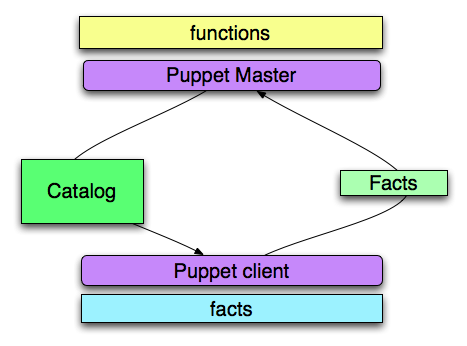
Functions
Puppet has two types of functions statements and rvalues.
Functions
Statements take actions without returning a value.
Example:
notice("${hostname} has no node definition")
Functions
Some statement functions
- tag: sets a tag for all resources contained in the current scope.
- include: evaluate a class.
- realize: makes a virtual resource real.
- require: Evaluate one or more classes, adding the required class as a dependency.
- fail: Fail with a parse error.
Functions
Rvalues are only used when a return value is required.
Example:
$user = 'elvis'
$tmp_passwd = sha1("${uniqueid}${hostname}${user}")
user {$user:
ensure => present,
password => $tmp_passwd,
}
notice("Elvis's password is ${tmp_passwd}")
Functions
Some rvalue functions
- defined: returns a boolean value dependent on whether a class or resource is declared.
- file: returns the contents of a file from the server.
- generate: returns the results of an shell command.
- tagged: returns true if the current container is tagged with specified tag or tags.
- regsubst: regex string replacement.
- sha1: returns a SHA1 hash value from a string.
Functions
Documentation
http://docs.puppetlabs.com/references/latest/function.html
More Metaparameters
- alias: creates an alias for a resource name.
- audit: audit resource attributes.
- noop: tells the resource to take no action. Can be true or false.
- loglevel: sets loglevel value. Values can be debug, info, notice, warning, err, alert, emerg, crit, verbose.
- schedule: sets a schedule for an resource to be managed.
- tag: sets a tag.
More Metaparameters
Example of using schedule.
schedule { daily: period => daily, range => '2-4' }
exec { '/usr/bin/apt-get update': schedule => daily }
More Metaparameters
Reference Documentation
http://docs.puppetlabs.com/references/latest/metaparameter.html
Tags
Arbitrary tags can be applied to resources or collections of resources.
Tags
Using the tag metaparameter.
@user { 'elvis':
ensure => present,
tag => 'hounddog',
}
User <| tag == 'hounddog' |>
Tags
Using the tag function.
class legends {
tag('hounddog')
user { 'elvis':
ensure => present,
}
}
class clowns {
user { 'bozo':
ensure => present,
}
}
include clowns,legends
puppet apply -v --tags hounddog elvis_tags_function.pp
Tags
Implicit tags
class legends {
user { 'elvis':
ensure => present,
}
}
class clowns {
user { 'bozo':
ensure => present,
}
}
include clowns,legends
puppet apply -v --tags clowns elvis_tags_function.pp
Nodes
Puppet node declarations look just like classes.
Example
node 'foo.puppetlabs.com' { include ssh }
Nodes
When the node foo.puppetlabs.com connects to the puppetmaster, it will be assigned the ssh class.
Nodes
They support inheritance.
node base {
include ssh
include puppet
include security
}
node 'foo.puppetlabs.com', 'bar.puppetlabs.com' inherits base {
include redmine, wordpress
}
Nodes
You can also specify a node named default, which will be used if no directly matching node is found.
node default {
notice("${hostname} has no node definition")
}
Client Server Executables
Puppet Agent
The puppet agent daemon runs on all of your Puppet managed nodes.
It is responsible for:
- sending facts to the puppetmaster
- executing the returned catalog
Puppet Agent
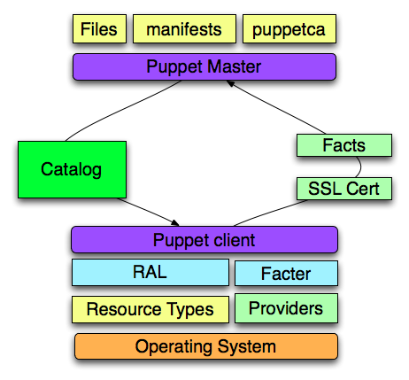
Puppet Agent
The main configuration file for Puppet is /etc/puppet/puppet.conf.
It supports per executable and global configuration sections.
- [main]
- [agent]
- [master]
Puppet Agent
Puppet Agent configuration options
- vardir: location where Puppet stores dynamically growing information.
- rundir: location where Puppet PID files are stored.
- ssldir: location where SSL certificates are stored.
- ca_server: the server to use for certificate authority requests.
- server: the host name of the puppetmaster.
Puppet Agent
Example: /etc/puppet/puppet.conf
[main] vardir = /var/lib/puppet rundir = /var/run/puppet ssldir = $vardir/ssl [agent] ca_server = puppetca.puppetlabs.com server = puppet.puppetlabs.com
Puppet Agent
Some useful commandline arguments
--no-daemonize--debug--configprint--test--tags--waitforcert
Puppet Master
Puppetmasterd is responsible for:
- authenticating client connections
- compiling manifests and templates
- returning catalog to client
- serving files
Puppet Master
Puppet Master
Some configuration options
- modulepath: location of module directories.
- manifest: path for site.pp.
- manifestdir: path to the manifest directory.
- certdnsnames: colon separated list of dns names to be added as aliases in the certs.
- autosign: enables or disables autosigning or sets the path to the autosign.conf file.
- ca: specifes whether or not to serve as a ca.
Puppet Master
Useful commandline options
--no-daemonize--debug--verbose--configprint
Puppet Cert
The puppet cert command is responsible for managing the client and server certificates.
Puppet Cert
When puppet agent runs for the first time, it:
- generates a new certificate
- sends a CSR to the server to be signed
- by default checks for a signed cert every two minutes.
Unless autosigning is enabled, the certificates must be signed manually using puppet cert.
Puppet Cert
Listing the certificates that need to be signed.
puppet cert --list foo.puppetlabs.com
Puppet Cert
Listing all the certificates.
puppet cert --list --all + betty.puppetlabs.com foo.puppetlabs.com + test.puppetlabs.com + puppet.puppetlabs.com + andres.puppetlabs.com
Puppet Cert
Signing the certificates.
puppet cert --sign foo.puppetlabs.com
Puppet Cert
Revoking a certificate
puppet cert --revoke foo.puppetlabs.com Revoked certificate with serial 8
Puppet Cert
Remove a certificate
puppet cert --clean foo.puppetlabs.com Removing /var/lib/puppet/ssl/ca/signed/foo.puppetlabs.com.pem Removing /var/lib/puppet/ssl/private_keys/foo.puppetlabs.com.pem Removing /var/lib/puppet/ssl/certs/foo.puppetlabs.com.pem
Bootstrapping
Installing Puppet.
- Automated provisioning of your systems is still necessary.
- Your image should be the minimalized install that is required to bootstrap Puppet.
- You should include the requirements for any resource types that you intend to use.
Lab
Lab: Bootstrapping Puppet
Create:
- An
/etc/puppet/manifests/site.ppfile.
Do:
- Edit the
/etc/puppet/manifests/site.ppto include adefaultnode declaration and anoticefunction. - Manually setup your Puppet master and client and verify that they can communicate.
- Examine the certificates that need to be signed on the puppet master using the command
puppet cert. - Create a node declaration for you Puppet client in
site.ppand include a module class.
Puppet Filebucket
Puppet can be configured to use a local or network filebucket.
Files that are modified/removed as part of a catalog execution are stored in the filebucket.
Puppet Filebucket
There is also puppet filebucket executable that can be used to retrieve files from the filebucket.
puppet filebucket restore -l /tmp/passwd 429b225650b912a2ee067b0a4cf1e949
Puppet Filebucket
The puppet filebucket executable can backup files.
puppet filebucket backup -l /etc/passwd
Environments
Environments allow you to specify separate manifests, files, and templates on a single puppetmaster per environment.
- Environment naming is arbitrary.
- Default environment is called Production.
Environments
Configuring environments on your Puppetmaster.
#/etc/puppet/puppet.conf [production] manifest = /etc/puppet/production/site.pp modulepath = /etc/puppet/production/modules [development] manifest = /etc/puppet/development/site.pp modulepath = /etc/puppet/development/modules [test] manifest = /etc/puppet/test/site.pp modulepath = /etc/puppet/test/modules
Environments
Puppet agent must know their environment.
[agent] environment = development
Environments
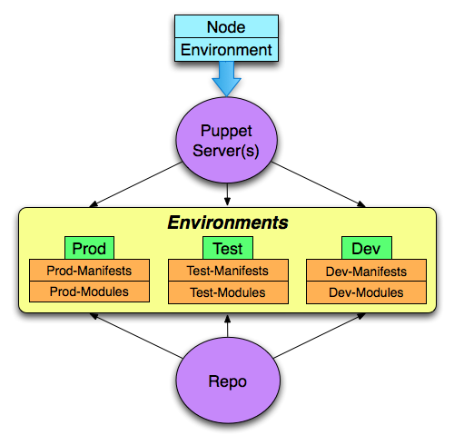
Custom Facts
Puppet provides an api for developing custom facts.
Custom Facts
Example: simple fact to determine the role of a server.
# role.rb
require 'facter'
Facter.add("role") do
setcode do
Facter::Util::Resolution.exec("cat /etc/role")
end
end
Custom Facts
Create a lib/facter directory inside a module called myfacts
mkdir -p /etc/puppet/modules/myfacts/lib/facter
Export this path as ruby lib for testing.
export RUBYLIB=/etc/puppet/modules/myfacts/lib
Place your custom fact inside of the myfacts/lib/facter directory
cp role.rb $RUBYLIB/facter/.
Execute facter
facter role
Custom Facts
In order to distribute facts:
- Place the facts in a
MODULEPATH/MODULENAME/lib/facterdirectory - Enable pluginsync in
/etc/puppet/puppet.conf.
[main] pluginsync = true
Lab
Lab: Create Custom home fact
Create:
- A
myfactspuppet module in/etc/puppet/modules/ - A
/etc/puppet/modules/myfacts/lib/facter/sub directory - A file
/etc/puppet/modules/myfacts/lib/facter/home.rbfor your fact
Do:
- Write a custom fact
homethat returns the user’s home directory from the$HOMEenvironment variable.
More info:
- Hint: Ruby hash ENV[‘HOME’] returns the $HOME environment variable.
- Extra Credit: Develop a fact that returns all of your environment variables as facts.
Custom Functions
Puppet provides an api for developing custom Functions.
Custom Functions
Example: Simple Function that returns the hostname of the Puppetmaster.
# mastername.rb
require 'socket'
module Puppet::Parser::Functions
newfunction(:mastername, :type => :rvalue ) do
Socket.gethostname.chomp
end
end
Custom Functions
Custom Functions
Create a lib/puppet/parser/functions directory inside a module called myfunctions
mkdir -p /etc/puppet/modules/myfunctions/lib/puppet/parser/functions
Because functions are part of the puppet language, they must be tested inside of a manifest as puppet code.
$mastername = mastername()
notice("This server is managed by the $mastername puppetmaster")
This function will now be available to puppet agent and puppet master as long as modulepath is set correctly.
Lab
Lab: Custom Encryption Function
Create:
- On your puppetmaster: a
myfunctionspuppet module in/etc/puppet/modules/ - An
/etc/puppet/modules/myfunctions/lib/puppet/parser/functions/subdirectory - A file
/etc/puppet/modules/myfunctions/lib/puppet/parser/functions/mycrypt.rb
Do:
- Write a custom function called
mycryptthat returns an encrypted string when given a string as an argument.
Hint: Ruby encryption Example
require “digest/sha1”
module Puppet::Parser::Functions
newfunction(:mycrypt, :type => :rvalue ) do |args|
Digest::SHA1.hexdigest(args0)
end
end
Reporting
It is possible to configure puppet agent to generate and send a report to the puppet master after every Puppet run.
Reporting
Available Reports Handlers
- http
- log
- rrdgraph
- store
- tagmail
Reporting
Log
- Contains every log message in a transaction.
- Can be used to centralize client logs into syslog.
Reporting
RRD Graph
- Generates RRD graphs from transaction report data.
- Requires Ruby’s rrdtool library and the rrd binary.
Reporting
Store
- Stores report data on puppetmaster as YAML.
Reporting
Tagmail
- Delivers log reports via email for messages of notice or above.
# # /etc/puppet/tagmap.conf # all: fng@puppetlabs.com webserver: webadmin@puppetlabs.com
Reporting
Processing reports
The following methods from Puppet::Transaction::Report are available to your reports.
- host – certificate name of reporting host
- time – time when the report was generated
- logs – list of log messages associated with report
- metrics – metrics for report
- resource_statuses – mapping of resource status for a run to events.
Reporting
Report Logs: Information about messages logged during a run.
- level: loglevel
- message:
- source: resource that generated message.
Puppetindicates the message was not generated by a resource.
- tags: All tags associated with resource.
- time: Time message was generated.
- version: Version associated with message source.
- config_version configuration parameter.
- puppet version
Reporting
Report Metrics
- time
- schedule
- Config retrieval
- filebucket
- resource times
- resources
- total, out of sync, failed, changed, skipped, failed to restart
- events
- totals, successful, failures
Reporting
Report resource status
- Hashes resource id => Puppet::Resource::Status
- Puppet::Resource::Status
- evaluation_time: resource evaluation time.
- events: events that have been triggered by resoureces.
- file: source file containing resource declaration
- line: line of the source file where resource is declared
- resource: resource id – Type[‘title’]
- source_description: Fully qualified resource id
- tags: list of tags applied the resource
- time: when resource was evaluated
- version: version for certain configuration
- Puppet::Resource::Status
Reporting
Events
- When resources need to be synchronized, they create events.
- Puppet::Transaction::Event
- name:
- desired_value:
- previous_value: !ruby/sym absent
- message:
- property:
- resource:
- status: success
- tags:
Reporting
Puppet Agent
#
# /etc/puppet/puppet.conf
#
[agent]
report = true
Reporting
Puppet Master
#
# /etc/puppet/puppet.conf
#
[master]
reports = tagmail,store,log
Lab
Lab: Reporting with the Puppet Dashboard
Create:
- Puppet Dashboard instance
yum install puppet-dashboard mysql mysql-serverservice mysqld start && chkconfig mysqld oncd /usr/share/puppet-dashboardrake RAILS_ENV=production db:createrake RAILS_ENV=production db:migrateservice puppet-dashboard start && chkconfig puppet-dashboard on
Do:
- Point web browser at VM’s ipaddress, port 3000. eg.
http://192.168.135.131:3000 - Verify that no nodes are in Dashboard yet.
- Create directory:
mkdir -p /var/lib/puppet/lib/puppet/reports - Copy report processor:
cp /usr/share/puppet-dashboard/ext/puppet/puppet_dashboard.rb /var/lib/puppet/lib/puppet/reports/ - Add
puppet_dashboardto thereports=line inpuppet.conf - Do a
puppet agentrun to submit a report. - Verify that the agent’s report appeared in the Dashboard.
External Nodes
Puppet allows you to specify an external nodes classification tool.
- Replaces node declarations in
/etc/puppet/manifests/site.pp. - Allows specification of a
listof classes and ahashof parameters. - Variables are set at top scope.
External Nodes
Configuring
# /etc/puppet/puppet.conf on the puppetmaster [master] node_terminus = exec external_nodes = /usr/bin/puppet_external_node.rb
External Nodes
When executed with $certname as an argument, External Nodes scripts output YAML to STDOUT.:
classes: - common - puppet - dns - ntp parameters: puppet_server: puppet.puppetlabs.net dns_server: ns.puppetlabs.net datacenter: slicehost
External Nodes
Which is equivalent to
node "somenode.puppetlabs.net" {
$puppet_server = "puppet.puppetlabs.net"
$dns_server = "ns.puppetlabs.net"
$datacenter = "slicehost"
include common, puppet, dns, ntp
}
External Nodes
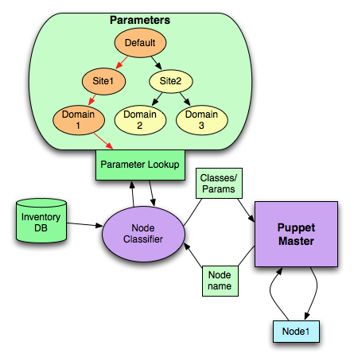
External Nodes
Exercise: External Nodes with the Puppet Dashboard
- Modify
puppet.confto use the Dashboard external_node script[master] node_terminus = exec external_nodes = /usr/share/puppet-dashboard/bin/external_node
service puppet-dashboard restart- Add your available classes to the dashboard by selecting
Add Class - If a node is not already present in the dashboard, add a node with the client’s $certname using the
Add nodebutton. - Set parameters for that node and include some classes.
- Verify that classes and parameters were assigned to nodes by doing a
puppet agentrun.
Extra:
- Create a group with parameters and classes
- Assign nodes to the group
Exported Resources
Puppet has the ability to export resources to a database so that they can be collected and used on other hosts.
class hosts {
@@host { $hostname: ip => $ipaddress, host_aliases => $fqdn }
Host <<||>>
}
Exported Resources
Allows nodes to collectively share information
- requires configuration of storeconfigs.
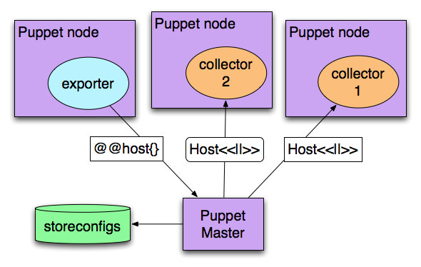
Exported Resources
But what if there is a host entry that we don’t want to have in the /etc/host files.
- We can use the
resourcesresource to purge rogue entries. - Exported resources for decommissioned servers must be purged from the database using a script.
Lab
Lab: Configuring storeconfigs, exporting and collecting resources.
Create:
- Storeconfigs database on your Puppet server
yum install sqlite rubygem-sqlite3-ruby rubygem-rails
# /etc/puppet/puppet.conf [master] storeconfigs = true dbadapter = sqlite3 dblocation = /var/lib/puppet/storeconfigs.sqlite
- You must restart puppet master to initialize the storeconfigs db.
service puppetmaster restart
Use:
- The
resourcesresource to setup purging for invalid keys. - Using the ssh module, export all host sshkeys and collect them on all servers.
Future Architecture
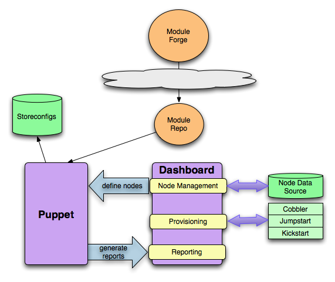